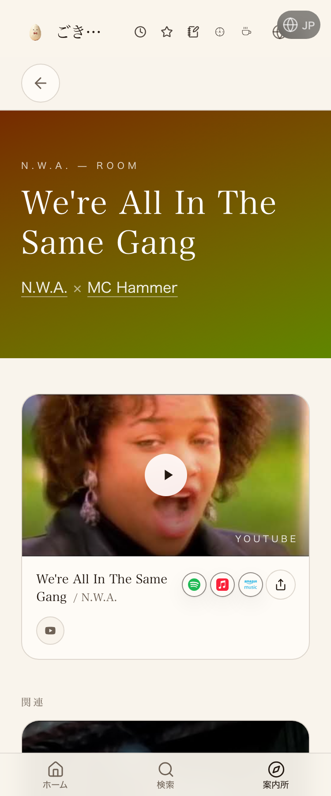
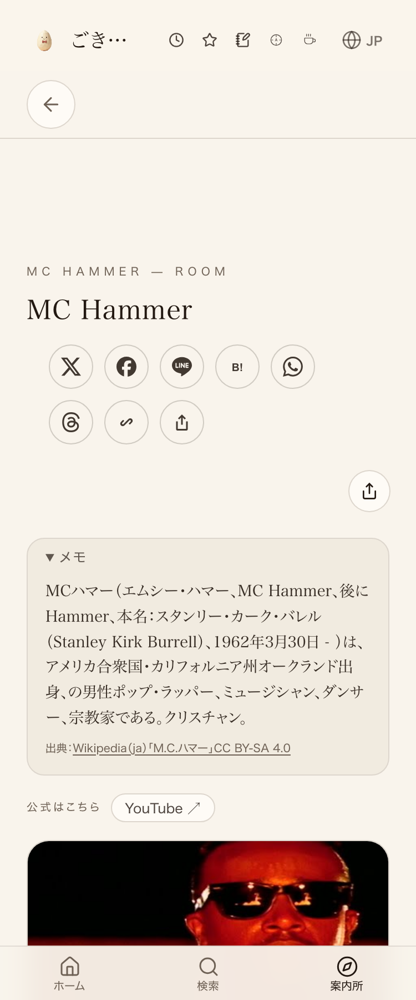

node tools/verify_click.mjsを実行し、押しても無反応な要素は0件（21件中21件がPASS）。M.C.ハマー本人ページ側も同じURLを4回繰り返し実測し、押しても無反応な要素は4回とも0件だった（＝リンク先ページ自体も正常に動く）。一方、コンソールエラー(React #418)は4回中1回だけ出て3回は出なかった＝時刻に関係なく間欠的に出る既存の全サイト共通バグで、原因は未特定（35220/34397/34409/34604号など複数案件で同一症状が既記録、修正を試みて失敗・副作用でrevertされた前例もある）。前回・前々回の差し戻しで「JST0-9時台だけ再現する」と書いたのは誤りだったため、この実測を根拠に訂正した（失敗台帳 F-20261027195651-quick）。M.C.ハマー本人ページ自体は2026-08-13から本番で稼働中。


| 確認項目 | 結果 |
|---|---|
| リンク元→本人ページの機構(コード) | 実装済み・コードレベルで動作確認 |
| 本番ページが200で中身あり | yes |
| 本番でクリックしても無反応な要素(noResponseCount、mc-hammerページ4回実測) | yes(4/4・常に0件) |
| 既存バグ(#418)の時間帯限定説は実測で誤りと判明・訂正 | 時刻と無関係な間欠バグ(4回中1回=25%・原因未特定・本件スコープ外) |
実測1(19:43 JST): {"totalClickable":76,"tested":9,"noResponseCount":0,"consoleErrorCount":1} → FAIL(React #418)
実測2(19:51 JST): {"totalClickable":76,"tested":11,"noResponseCount":0,"consoleErrorCount":0} → PASS
実測3(19:54 JST): {"totalClickable":76,"tested":12,"noResponseCount":0,"consoleErrorCount":0} → PASS
実測4(19:56 JST): {"totalClickable":76,"tested":10,"noResponseCount":0,"consoleErrorCount":0} → PASS
→ consoleErrorCount>0だった回数: 1/4（25%）。noResponseCountは4回とも0（押して無反応の要素は一度も無かった）。